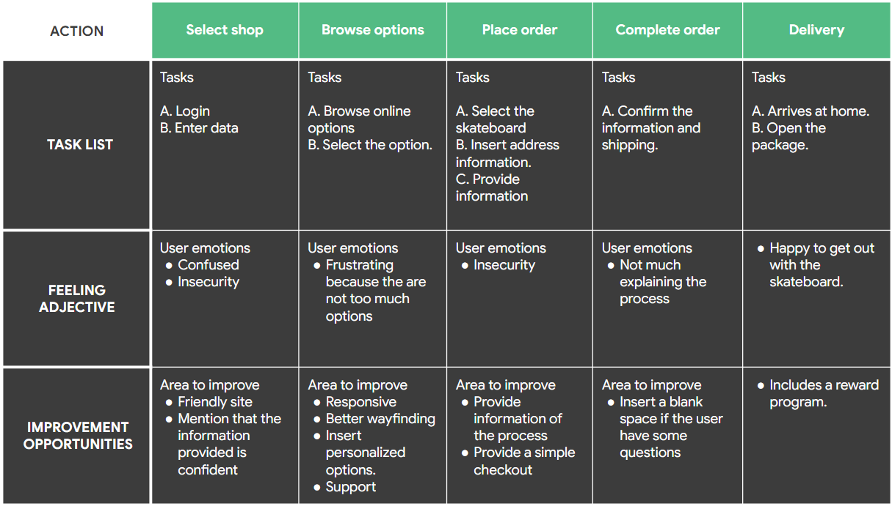

The process of creating a wedding menu is cumbersome and requires a lot of presence, which is frustrating for women who are short in time.
The project has different phases: Conducting interviews, paper and digital wireframing, low and high-fidelity prototyping, conducting usability studies, accounting for accessibility, and iterating on designs.
Dreams Menu is design of a catering menu app for weddings.
December 2021 to May 2022.
A friendly application in which women can organize their wedding menu in their free time, without stress, with support and freedom to modify it.
UX designer covered the design process from beginning to to end on my own.
I conducted interviews and created empathy maps to understand the users I'm designing for and their needs. A primary group identified through research was working people that don't have time to visit face-to-face caterings.
The user group confirmed that it's very stressful organize a wedding and the menu is one of the most important things of the event. Other user problems are the few time to organize a menu because of children in some cases or a completing job. Also, they told that have to wait a lot of time to be attended and all the ideas that write in their breaks are changed because the catering “don't have the dish” or “charge a fee because want a different option”.
It's stressful to organize a wedding with a demanding life.
There are no platforms to catering a menu for an outdoor wedding venue. The majority are mode face-to-face.
Goal: Create a personalized wedding menu in a short time.
Using the completed set of paper and digital wireframes, I created a low-fidelity prototype. The primary user flow I connected was log in, order a menu and schedule, so the prototype could be used in a usability study.
Users want to organize a wedding menu in the comfort of home.
Users want information about prices.
Users want a calendar in the schedule time.
Schedule date without information about why I have to do this, is confusing.
Help assistant have to be in the screen in the most important process.
After mockups I created the final high-fidelity prototype that presented a cleaner user flows for build a wedding’s menu. Also, the app have another things that complement, such as opinions of users, catering and news.
Provided access to users who are vision impaired through adding alt text to images for screen readers.
Used icons to help make navigation easier.
Used detailed imagery for dishes to help all users better understand the designs.
The app makes users feel like Dream's Menu really thinks about how to meet their needs.
One quote from peer feedback: “Dream's Menu application is really useful to organize a wedding menu in spare time, without stress and is very friendly to users like me who are not very technological”.
While designing the Dream's Menu App, I learned that the first ideas for the app are only the beginning of the process. Usability studies and peer feedback influenced each iteration of the app's designs.
Thank you for your time reviewing my work on the Dream's Menu App! If you'd like to see more or get in touch, please visit my Linkedin.